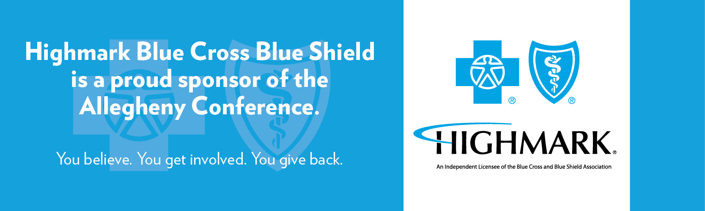
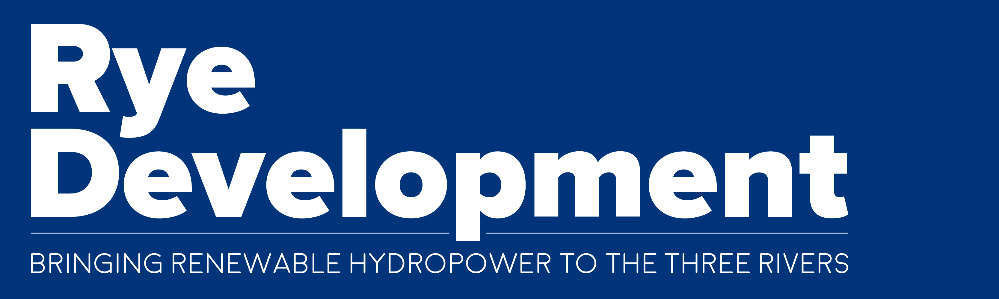
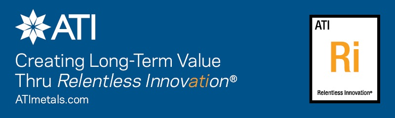
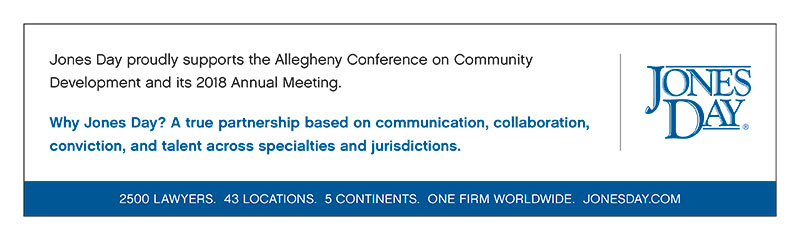

Improving Competitiveness
To improve our region’s competitiveness and respond to community needs, the Conference will address regional challenges by focusing on efforts to remove barriers and impediments in economic inclusion, community and sustainability, infrastructure, business competitiveness and workforce and education.

Economic Inclusion
The passage of PA House Bill 1419 (Act 56 of 2018), or “Clean Slate” legislation, is an important step in addressing the Pittsburgh region’s workforce challenge while expanding economic inclusion to all of our communities. The bill provides for automatic sealing of criminal records for certain individuals with misdemeanor convictions, allowing potential employers to look past minor mistakes and focus on the qualifications of the individual.
Another critical step in support of the Allegheny Conference's economic inclusion agenda, HB 163 (Act 95 of 2018) reforms the policy of suspending driver’s licenses for minor offenses, which serves as a barrier to employment and reduction in quality of life.

The strong bipartisan passage of these laws are wins for improving equity across Pennsylvania and we thank Governor Wolf and the legislative leadership for their support.
We have also started to build a foundation to expand onramps to corporate supplier chains for minority-owned businesses, which will help diversify our economy’s growth sectors by including more small businesses. Partnering with a range of public and private partners, we have developed a strategy to expand access to capital, markets, networks, workforce and expertise for both young and established minority businesses to spur wealth building among minority residents.
In 2018, this strategy was chaired by Grant Oliphant, President, The Heinz Endowments.
Community and Sustainability

An increase to the NAP tax credit – which provides long-term sustainable investment in locally-based revitalization organizations serving low income neighborhoods – is a reality. In 2018, PA House Bill 645 passed both chambers and was signed into law by Governor Wolf as Act 100 of 2018. This legislation successfully increases the NAP cap from $18 million to $36 million and provides critical funding to support and improve our most vulnerable communities. This tax credit is the engine of our Strengthening Communities Partnership (SCP) program and will assist the funding of our SCP communities: Connellsville, Homewood, McKees Rocks, Mount Oliver/Knoxville, Sharpsburg, Washington and Wilkinsburg. Thank you to Governor Wolf and our bipartisan legislative champions for this critical investment.
In 2018, the Conference, working in partnership with the leadership of the Strategic Investment Fund, engaged in a process to refine the Fund’s strategic focus to ensure that it is best positioned to meet the region’s needs in creating a 21st century economy for all. A signature investment in 2018 included a $4 million loan for the speculative development of District 15 in the Strip District, which, upon completion was fully leased by Facebook. True to SIF’s mission, this investment filled a funding gap needed to support critical economic development.
In 2018, this strategy was chaired by Jerry MacCleary, Chairman and CEO, Covestro LLC.
Sponsor Ad
Infrastructure
Collaborating with partners across the Pittsburgh region, the Allegheny Conference was key in organizing the Rail~Volution Conference in Pittsburgh this past October. A national conference that assembles transportation infrastructure thought leaders to share ideas, Rail~Volution offered the Pittsburgh region a platform to hone strategies and influence policies in the public transportation, transit-oriented development, placemaking and community development fields.
In 2018, this strategy was chaired by Nick DeIuliis, President and CEO, CNX Resources Corporation.

Sponsor Ad
Business Competitiveness

We successfully advocated for a legislative fix to the Pennsylvania Department of Revenue’s bulletin that made Pennsylvania’s business environment less competitive. Specifically regarding the “bonus depreciation” tax issue, we worked with partners across the Commonwealth to change a policy and allow Pennsylvania businesses to deduct depreciation of a purchased asset before it’s sold or disposed. We prevented PA from being the only state in the nation to move forward with this type of tax policy with the passage of SB 1056 (Act 72 of 2018).
In 2018, this strategy was chaired by Morgan O’Brien, President and CEO, Peoples Natural Gas.
Sponsor Ad
Workforce & Education
The Allegheny Conference’s Workforce strategy is focused on three areas: talent attraction and retention; building HR capacity; and K-12 business engagement.
- In our efforts to retain and attract talent, we partnered with Thrival to capitalize on the tech talent audience in town for the innovation conference; we provided presidents from 18 regional colleges and universities with messages about the region and a call to students to stay upon graduation; we provided career services offices with information highlighting off-campus amenities in the region; and we began development of a regional talent attraction toolkit for HR recruiters.

- To build HR capacity, efforts zeroed in on fully leveraging our Inflection Point data that showed gaps in our community’s capacity to address some of the challenges identified in our report – namely how to stop the outflow of college students and our significant worker shortage.
- Lastly, our K-12 business engagement work began mapping existing business investments in STEM, project-based learning in over 100 school districts in the region to determine funding overlap, gaps, and opportunities for collaborative efforts. We also set the table to hold a “CEO day” in schools in which we believe will inform our work in this space for the next 12-18 months.
On the policy front, we made a significant step to enhance the preparation of the workforce of the future, through the reauthorization of the federal Carl D. Perkins Career and Technical Education Act, now known as the Strengthening Career and Technical Education for the 21st Century Act. The reauthorization of this legislation will help train the current and future workforce in demand throughout the Pittsburgh region.
In 2018, this strategy was chaired by Dave Malone, President and CEO, Gateway Financial.
Sponsor Ad
The Allegheny Conference’s 2018-19 Agenda: Creating a Next Generation Economy for All focuses on Growing the Economy, Improving the Region’s Competitiveness, and Measuring the Region. View our progress on Growing the Economy here and Measuring the Region here.